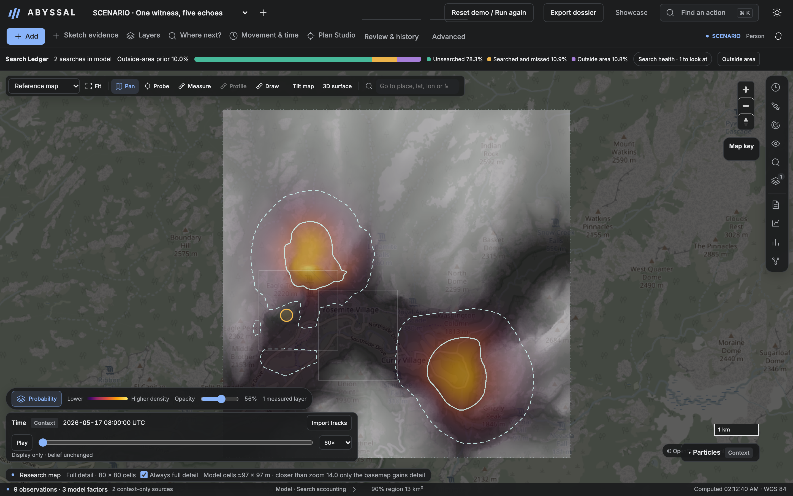
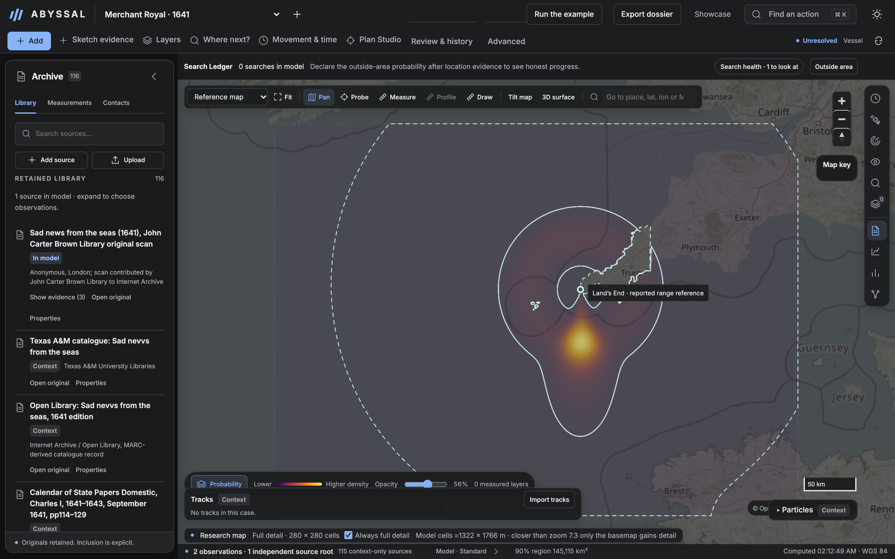
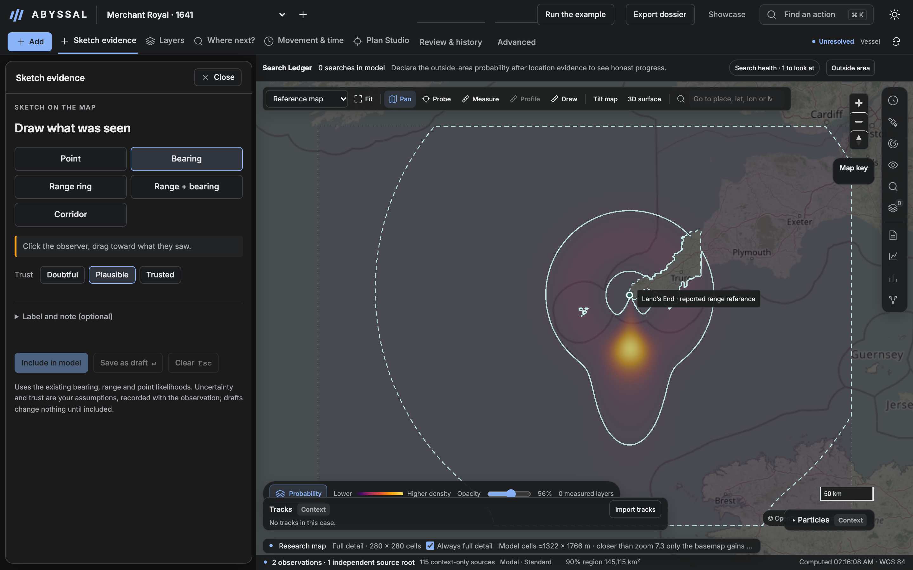

Why a Probability Map Should Refuse to Lie
The coverage fallacy, perceptual cartography, human-admitted belief, and designing a workspace where context can never silently masquerade as truth.
Suppose you lose your keys somewhere in your house. You spend five minutes searching the kitchen and come up empty. Two quiet thoughts follow immediately, though we rarely articulate them with precision:
- Does an empty kitchen mean the keys are not in the kitchen? No. You may have missed them behind the kettle or under a tea towel. How much the search lowers the chance they are in the kitchen depends entirely on how thorough those five minutes were.
- Does an empty kitchen make the hallway more likely? Yes—and it also makes it slightly more likely that you left them in your coat pocket at the pub.
Now scale that domestic moment up to a mountain range, an ocean basin, a hundred search volunteers, or a multi-million-dollar seabed survey. The arithmetic is identical, yet human teams—even highly trained ones—stumble into the same three cognitive traps with clockwork regularity.
The three ways searchers deceive themselves
- The coverage fallacy: Hearing "we covered 80% of the search box" and mentally translating it into "we had an 80% chance of finding the target." If your sensor or search team only spots the target seven times in ten when it is actually in front of them, then covering 80% of a box that has a 90% chance of containing the target yields only \(0.90 \times 0.80 \times 0.70 = 50.4\%\) pre-search probability of success—not 80%.
- Boundary amnesia: Every map has an edge. If you began 90% confident the target lay inside your drawn polygon and 10% confident it lay outside, every empty search inside the polygon is quiet evidence that the target was never inside your box in the first place. Almost no operational dashboard updates the outside-the-box share.
- Conflating context with evidence: Modern mapping tools make it effortless to pile twenty layers onto a screen—bathymetry, satellite scenes, historical rumours, automated detections, weather models. When a tool automatically folds an unverified rumour or an uncalibrated detector into a heatmap, the map stops being a record of justified belief and becomes an impressive-looking hallucination.
Imagine a search coordinator briefing families after two days of sweeps: "We have thoroughly covered 80% of the valley." Everyone in the room hears that four-fifths of the uncertainty is gone. Now ask a sharper question: given that you found nothing, where does the remaining probability actually sit?
Under a 90% inside-area prior and a 70% probability of detection, the largest single slice of remaining belief—43.55%—sits in the ground you just finished calling "done." A further 20.16% now sits completely outside your drawn boundary—double what it was when you started. Only 36.29% sits in the unsearched strip everyone is pointing at on the wall.
Interactive: The coverage fallacy & the honest three-part ledger
Drag the detection slider down to 35% (typical for visual ground search in dense timber) and watch the "Searched & missed" bar dominate the entire remaining belief. These numbers are model-relative beliefs, valid only under the declared prior and POD assumptions.
The firewall: nothing moves the map until a human admits it
ABYSSAL was built around one architectural conviction: there must be an uncrossable firewall between Context and Evidence.
You can download a high-resolution bathymetry grid, import a hundred historical pamphlets, stream live aircraft and shipping traffic, run a satellite time-machine over thirty days of NASA imagery, or run an automated anomaly scan. Every single one of those actions produces Context. None of them moves a single cell of the probability map by even one millionth of a percent.
For a piece of information to alter belief, it must pass through a strict, auditable chain: a raw Source (stamped with its origin URL, retrieval timestamp, byte size, licence, and SHA-256 hash) yields a Claim linked to its provenance root, which is translated into a typed Observation with explicit units and analyst assumptions—and sits harmlessly as an inactive Draft until a named human inspects a live preview and clicks Admit.
The Provenance & Admission Firewall
Cartography that stops lying: Graphite & Ember
Visual design in scientific software is not decoration; it is part of the inference pipeline. Early versions of ABYSSAL made two classic cartographic mistakes. First, the dark interface used a navy-blue palette over dark-blue water. Second, the default probability heatmap used a rainbow ramp running from blue through green and yellow to red.
Both choices quietly lie to the eye. Blue and green are the colours of sea and forest, so a low-probability cell blends invisibly into the ocean behind it while a mid-probability cell looks like coastline. Worse, rainbow colour ramps are not perceptually monotonic: bright yellow jumps out visually even when red represents higher density, creating phantom ridges that do not exist in the underlying distribution.
In the latest map-first redesign, ABYSSAL stripped away the navy tint and rebuilt the workspace around neutral graphite surfaces and a perceptually ordered Ember ramp—moving strictly upward in luminance from deep plum through magenta and burnt orange to glowing amber, containing zero blue and zero green. Simultaneously, the layout collapsed redundant toolbars so the map canvas itself occupies more than 82% of the viewport, with Sources, Model, and tools sliding cleanly beside the map rather than crushing it.

SCENARIO · One witness, five echoes): Two competing probability modes glow against real elevation shading without colliding with green forest or blue rivers. Across the top, the three-part Search Ledger strip reports Unsearched 78.3%, Searched and missed 10.9%, and Outside area 10.8% in one glance.Sketching evidence directly onto the world
A recurring flaw of Bayesian search tools is that they feel like filling out tax forms. In the field, people think geometrically: "the vessel was last seen roughly 10 leagues off Land's End", "a witness heard an engine along a bearing of 045°", "the hiker definitely cannot be in the lake, and must be south of the ridge".
ABYSSAL's Sketch Evidence palette lets an analyst draw points, bearings, range rings, range-and-bearing wedges, and travel corridors directly onto the map with live metric dimensions, snap-to-feature geometry, and instant preview—before saving them as editable drafts. For hard physical boundaries, Certain Area Statements allow 100% only-here or 0% not-here masks (including one-click sea/land masks derived from bundled 1:10m coastline geometry) that clip the posterior cleanly without distorting the relative ratios inside supported ground.


Zoom detail, exact edges, and the Offline Audit Pack
Two practical touches turn a neat prototype into a trustworthy instrument:
- Viewport zoom detail: Global grids over an ocean or mountain range inevitably have finite cell sizes (tens of metres to kilometres). As you zoom into a hotspot, ABYSSAL can recompute the visible viewport on a finer local grid while transparently displaying the exact model cell size in the status bar—telling you plainly when zooming further only sharpens the basemap, not the probability model.
- Zero-network Offline Audit Packs: A probability map that only lives inside one analyst's laptop cannot be audited by a sceptic, an insurer, or a court. From the Case Dossier, ABYSSAL exports a single, self-contained offline HTML file with a strict zero-network security policy: embedded posterior map, filterable admitted-evidence ledger, disclosed analyst assumptions, and a machine-readable SHA-256 verification receipt. Anyone can open it air-gapped and verify exactly how the map was made.
Once the interface refuses to blur context with evidence, a deeper mathematical problem steps onto the stage: what happens when five different documents in your archive are all repeating the exact same source? That is the subject of Part II.